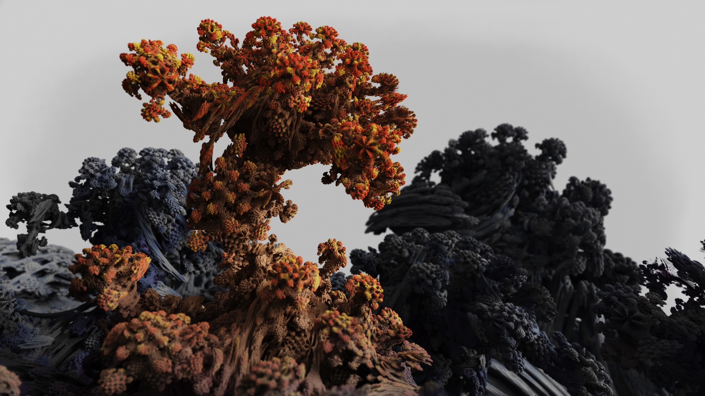

A project for rendering fractals using raymarching.
It started off as a voxel raytracer to render 3D julia sets.
Later on, I discovered a fractal called a mandelbulb and transitioned to
rendering it. (It used a different algorithm called raymarching).
I developed it more by adding different materials along with a node
graph editor to edit the materials (inspired by Blender).
I am currently working on rewriting the program in c++ with vulkan in the
Kaleidescope program
github
github
Gallery

Night City

Towers
